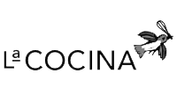
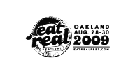

La Cocina presents a one-day street food feeding frenzy! We're closing the street. We're pouring street food inspired cocktails. We're serving casual, affordable food from every corner of the globe. Come eat with us. This is food for all. The day-long block party will bring together micro-entrepreneurs, informal food vendors and renowned chefs to celebrate great street food, entrepreneurial spirit and the vibrant communities of San Francisco. In addition to delicious eats, the festival will feature a beer and spirits garden, roving street musicians, street art projects, and a hands-on children's play area, as well as multi-lingual services for attendees. The event is a benefit for La Cocina.
The San Francisco Street Food Festival is a collaborative project with a special focus on the transition from informal to formal food businesses. Through partnerships with both non-profits and highly regarded restaurants, this event will work to connect communities throughout San Francisco's spectrum of class and culture to the everyday food that we all eat and love. The festival is a sister event to the Eat Real Festival, which will be taking place in Oakland's Jack London Square August 28 through the 30, 2009.
 